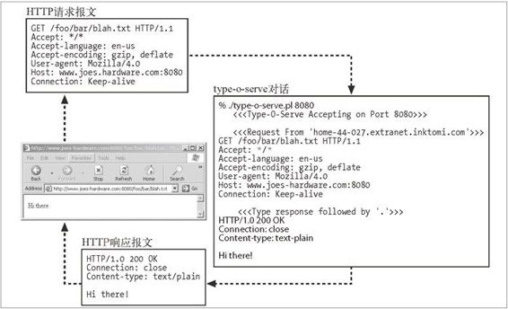

5.2 最小的 Perl Web 服务器
要构建一个特性完备的 HTTP 服务器，是需要做一些工作的。Apache Web 服务器的内核有超过 50 000 行的代码，那些可选处理模块的代码量更是远远超过这个数字。
这个软件所要做的就是支持 HTTP/1.1 的各种特性：丰富的资源支持、虚拟主机、访问控制、日志记录、配置、监视和性能特性。在这里，可以用少于 30 行的 Perl 代码来创建一个最小的可用 HTTP 服务器。我们来看看这是怎么实现的。
例 5-1 显示了一个名为 type-o-serve 的小型 Perl 程序。这个程序是个很有用的诊断工具，可以用来测试与客户端和代理的交互情况。与所有 Web 服务器一样，type-o-serve 会等待 HTTP 连接。只要 type-o-serve 收到了请求报文，就会将报文打印在屏幕上，然后等待用户输入（或粘贴）一条响应报文，并将其回送给客户端。通过这种方式，type-o-serve 假扮成一台 Web 服务器，记录下确切的 HTTP 请求报文，并允许用户回送任意的 HTTP 响应报文。
这个简单的 type-o-serve 实用程序并没有实现大部分的 HTTP 功能，但它是一种很有用的工具，产生服务器响应报文的方式与 Telnet 产生客户端请求报文的方式相同（参见例 5-1）。可以从 http://www.http-guide.com/tools/type-o-serve.pl 上下载 type-o-serve 程序。
例 5-1 type-o-serve——用于 HTTP 调试的最小型 Perl Web 服务器
#!/usr/bin/perl
use Socket;
use Carp;
use FileHandle;
# (1) use port 8080 by default, unless overridden on command line
$port = (@ARGV ? $ARGV[0] : 8080);
# (2) create local TCP socket and set it to listen for connections
$proto = getprotobyname('tcp');
socket(S, PF_INET, SOCK_STREAM, $proto) || die;
setsockopt(S, SOL_SOCKET, SO_REUSEADDR, pack("l", 1)) || die;
bind(S, sockaddr_in($port, INADDR_ANY)) || die;
listen(S, SOMAXCONN) || die;
# (3) print a startup message
printf(" <<<Type-O-Serve Accepting on Port %d>>>\n\n",$port);
while (1)
{
# (4) wait for a connection C
$cport_caddr = accept(C, S);
($cport,$caddr) = sockaddr_in($cport_caddr);
C->autoflush(1);
# (5) print who the connection is from
$cname = gethostbyaddr($caddr,AF_INET);
printf(" <<<Request From '%s'>>>\n",$cname);
# (6) read request msg until blank line, and print on screen
while ($line = <C>)
{
print $line;
if ($line =~ /^\r/) { last; }
}
# (7) prompt for response message, and input response lines,
# sending response lines to client, until solitary "."
printf(" <<<Type Response Followed by '.'>>>\n");
while ($line = <STDIN>)
{
$line =~ s/\r//;
$line =~ s/\n//;
if ($line =~ /^\./) { last; }
print C $line . "\r\n";
}
close(C);
}
图 5-2 显示了 Joe 的五金商店的管理员是如何用 type-o-serve 来测试 HTTP 通信的。

图 5-2 type-o-serve 实用程序让用户输入服务器响应，将其回送给客户端
首先，管理员启动了 type-o-serve 诊断服务器，在一个特定的端口上监听。由于 Joe 的五金商店已经有一个产品化的 Web 服务器在监听 80 端口了，所以管理员用下面这条命令在端口 8080（可以选择任意未用端口）上启动了 type-o-serve 服务：
% type-o-serve.pl 8080
只要 type-o-serve 开始运行了，就可以将浏览器指向这个 Web 服务器。在图 5-2 中，浏览器指向了 http://www.joes-hardware.com:8080/foo/bar/blah.txt。
type-o-serve 程序收到来自浏览器的 HTTP 请求报文，并将 HTTP 请求报文的内容打印在屏幕上。然后 type-o-serve 诊断工具会等待用户输入一条简单的响应报文，后面跟着只有一个句号的空行。
type-o-serve 将 HTTP 响应报文回送给浏览器，浏览器会显示响应报文的主体。